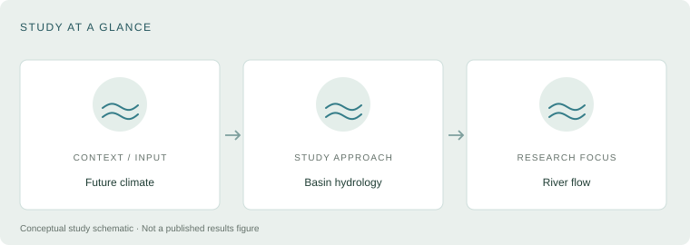

2023 · RESEARCH PUBLICATION
Projecting river flow across the Arkansas River Basin
We projected twenty-first-century river flow across the Arkansas River Basin to investigate how warming and drying may affect water availability. The study identifies declining flow across the major rivers, with particularly strong reductions in the western and southwestern basin, connecting climate change with regional water-resource planning.
Publication details
Yang, J., Zou, C., Will, R., Wagner, K., Ouyang, Y., King, C., Winrich, A. and Tian, H., (2023). River flow decline across the entire Arkansas River Basin in the 21st century. Journal of Hydrology, 618, p.129253.
